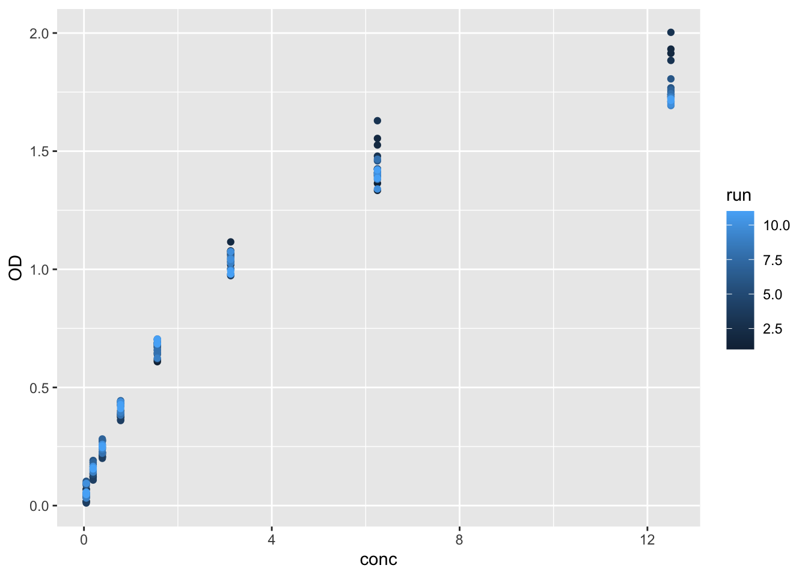
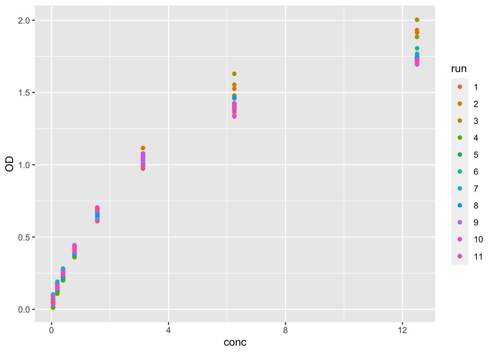
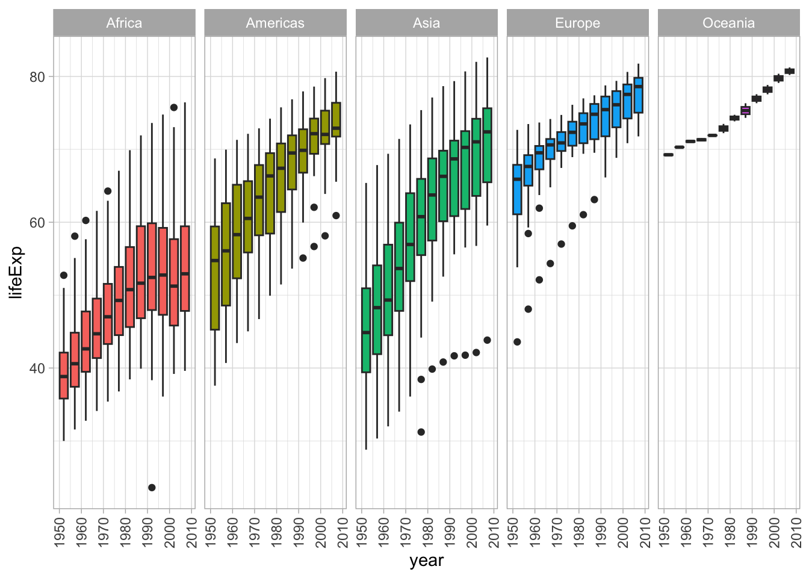
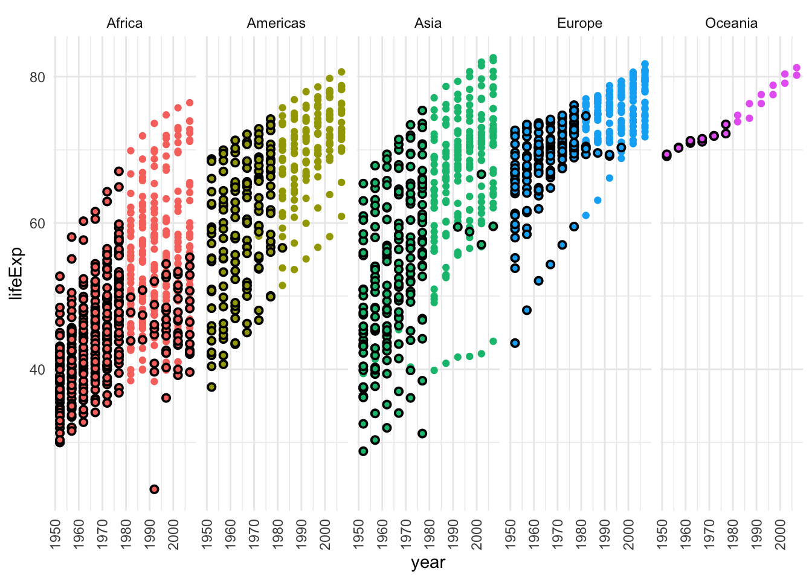
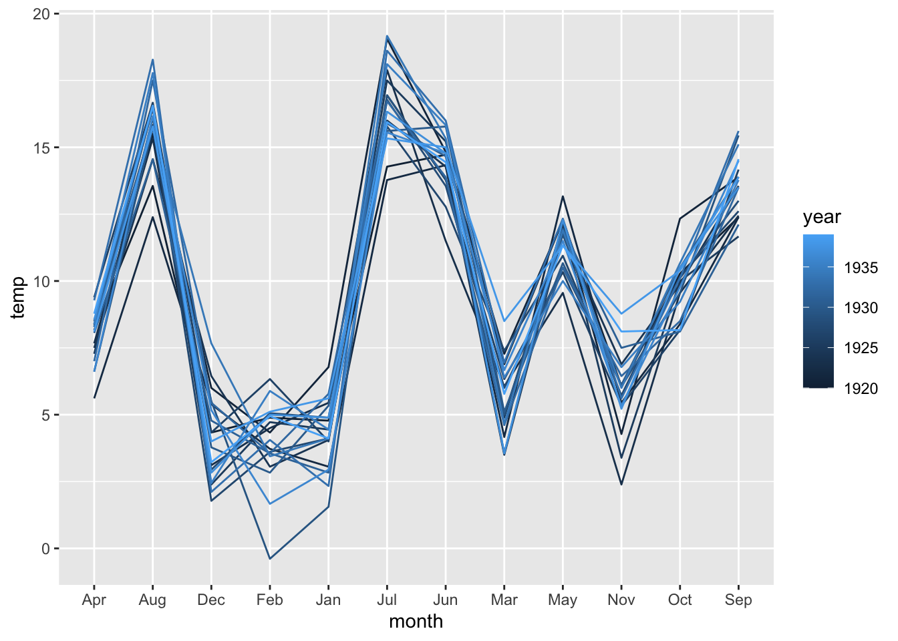
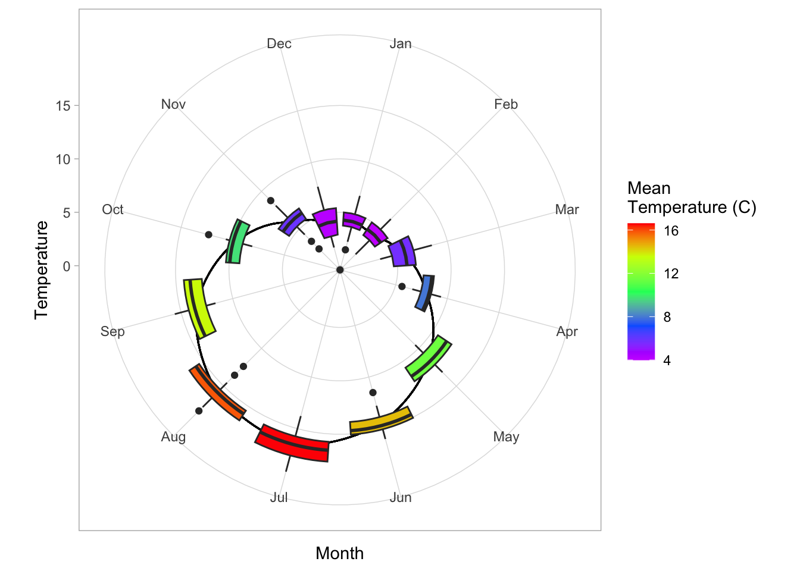

# read in the data
dnase <- read_table("dnase.txt")Workshop
Data organisation, handling and plotting
Session overview
In this session you will remind yourself how to import files, how to handle issues that can come up with irregular data and produce nice figures.
Prior to this workshop, there are some preparatory materials you can use to get ready on the VLE.
Philosophy
Workshops are not a test. It is expected that you often don’t know how to start, make a lot of mistakes and need help. It is expected that you are familiar with independent study content before the workshop. However, you need not remember or understand every detail as the workshop should build and consolidate your understanding. Tips
- don’t worry about making mistakes
- don’t let what you can not do interfere with what you can do
- discussing code with your neighbours will help
- look things up in the independent study material
- look things up in your own code from earlier
- there are no stupid questions
Key
These four symbols are used at the beginning of each instruction so you know where to carry out the instruction.
 Something you need to do on your computer. It may be opening programs or documents or locating a file.
Something you need to do on your computer. It may be opening programs or documents or locating a file.
 Something you should do in RStudio. It will often be typing a command or using the menus but might also be creating folders, locating or moving files.
Something you should do in RStudio. It will often be typing a command or using the menus but might also be creating folders, locating or moving files.
Something you should do in your browser on the internet. It may be searching for information, going to the VLE or downloading a file.
 A question for you to think about and answer. Record your answers in your script for future reference.
A question for you to think about and answer. Record your answers in your script for future reference.
Getting started
Start RStudio from the Start menu.
Go the Files tab in the lower right pane and click on the ... on the right. This will open a “Go to folder” window. Navigate to a place on your computer where you keep your work. Click Open.
Also on the Files tab click on New Folder. Type “data-analysis-in-r-3” in to the box. This will be the folder that we work in throughout the Data Analysis in R part BABS2.
Make an RStudio project for this workshop by clicking on the drop-down menu on top right where it says Project: (None) and choosing New Project, then New Directory, then New Project. Name the RStudio Project ‘week-1’.
Make a new script then save it with a name like analysis.R to carry out the rest of the work.
Load the tidyverse (Wickham et al. 2019) package (Use library(tidyverse))
Make a new folder called data-raw.
Exercises
DNase
The first dataset we will use is ~170 measurements of the Optical Density (OD) of the recombinant protein DNase at known concentrations measured during development of an ELISA array. There are 11 runs of the experiment in the dataset.
You should download the dataset from here and save it to your working directory. If you are unsure of what/where your working directory is, ask a demonstrator.
At the start of your script you should add a comment block explaining the experimental data (use lots of # to create space).
Read the dataset in (remember to script this), then check what it looks like;
# examine the whole array
View(dnase) Do you notice anything strange about the data?
It can be very easy to have slight errors in formatting when creating your own data files. For an error like this, we should trim off the characters, then convert the column type.
Use mutate and as.numeric to correct the issue with the array.
dnase <- dnase %>%
mutate(conc=str_remove(conc,"um")) %>%
mutate(conc= as.numeric(conc))We have used the pipe %>% character to join commands together (the new pipe |> would also work). Review last years’ material if this is unfamiliar. You may also recall from last year that mutate creates new columns. As we have given the same name, this has only replaced the existing column.
Lets make a plot to visualise these results. We have individual measurements, so a scatter plot would probably be most appropriate.
What are the explanatory and response variables for this dataset?
Make a scatter plot using ggplot. Use colours to represent the different runs.
ggplot(data = dnase,aes(x=conc,y=OD,colour=run))+
geom_point()
The runs have been plotted as a continuous variable, but they are discrete values, so use as.factor in the same style as when we changed the concentration to change run to a factor.
Create the plot again to see how it’s changed.
ggplot(data = dnase,aes(x=conc,y=OD,colour=run))+
geom_point()
In a figure like this, it’s probably not useful to identify each run so we can leave off the legend.
ggplot(data = dnase,aes(x=conc,y=OD,colour=run))+
geom_point()+
theme(legend.position = "none")Later in the course we will learn how to fit a nonlinear curve to this data, but for now we can try linear regression.
ggplot(data = dnase,aes(x=conc,y=OD,colour=run))+
geom_point()+
geom_smooth(method="lm")+
theme(legend.position = "none")This added a linear regression line for each run (as well as the standard error shaded area), which is a bit excessive in this case. This is because the geom_smooth inherited the aesthetic (aes) from the first ggplot command. It might also look better if the line is in the background, which we can adjust by reordering the commands.
ggplot(data = dnase,aes(x=conc,y=OD))+
geom_smooth(method="lm",color="#606060",se=FALSE)+
geom_point(aes(colour=run))+
theme(legend.position = "none")The se=FALSE turns off the standard error region, while the #606060 hex makes the line grey.
For your poster, you may want to adjust the size of labels, legend text etc. This can be done within the theme command.
ggplot(data = dnase,aes(x=conc,y=OD))+
geom_smooth(method="lm",color="#606060",se=FALSE)+
geom_point(aes(colour=run))+
theme_minimal()+
theme(legend.position = "none",
axis.text = element_text(size=14,family="serif"),
axis.title = element_text(family="Comic Sans MS",color="lightsalmon2"),
axis.title.x = element_text(size=16,face="bold"),
axis.title.y = element_text(size=18,face="italic"))This plot looks pretty terrible now, but it shows how much flexibility the theme() command gives you. Note that including theme_minimal before theme() will keep the elements from theme_minimal that we don’t change. Check here for more possibilities. This page might also be useful.
Gapminder
Gapminder is an organisation that provides a large dataset about global trends such as life expectancy.
Download the datafile and save it to your working directory.
Read the data in using read_csv into an object called gapdat. Let’s first have a quick look at how life expectancy (lifeExp) has changed globally over the years.
gapdat %>%
group_by(year) %>%
summarise(lifeExp = median(lifeExp)) How much has the median life expectancy increased in the last 55 years. Is this different from the mean? What does this mean?
We want to try some insightful data analysis, so lets add a column to the dataset containing the life expectancy in 1977, which is about halfway through the data.
gapdat <- gapdat %>%
group_by(country) %>%
filter(year==1977) %>%
summarise(med_lifeExp_77 = median(lifeExp)) %>%
full_join(gapdat)Joining with `by = join_by(country)`Here group_by groups the data by country, filter extracts only the year 1977, summarise takes the median of this data and full_join sticks this back to the original data frame.
We have three possible explanatory variables continent, country and year. There are 142 countries in the dataset, so it would be hard to plot all of those, so let’s include country and year. We can plot both simultaneously by using a facet plot.
ggplot(data = gapdat,aes(x=year,y=lifeExp))+
geom_boxplot(aes(fill=continent,group=year))+
facet_grid(cols=vars(continent))+
theme_light()+
theme(legend.position = "none",
axis.text.x = element_text(angle=90,vjust = 0.5))
We can see from the plot that all continents life expectancy is increasing. Let’s include the results of our analysis by switching to a geom_point. The facet_grid command is set to have the same number of columns (cols) as continents.
ggplot(data = gapdat,aes(x=year,y=lifeExp))+
geom_point(data = gapdat %>% filter(lifeExp > med_lifeExp_77),aes(x=year,y=lifeExp,colour= continent))+
geom_point(data = gapdat %>% filter(lifeExp <= med_lifeExp_77),aes(x=year,y=lifeExp,fill= continent),colour='black',shape=21,stroke=1)+
facet_grid(cols=vars(continent))+
theme_minimal()+
theme(legend.position = "none",
axis.text.x = element_text(angle=90,vjust = 0.5))
We can see some countries have life expectancies in 2007 below what they were in 1977, although the method of estimation of life expectancy has likely changed in this time. Using shape=21 is a point with an outline (thickness stroke =1) colour set by colour and the interior set by fill. Note where these occur in the bracket to determine which changes with variables.
How can we use filter to find these countries?
Nottingham Temperatures
The last data set we will use is a set of monthly average temperatures from Nottingham from the years 1920 to 1939.
Download the data from here and save it to your working directory.
Read in the data using the function read_xl from the readxl library. The double colon :: is a way to use a function from a library without loading the library.
notts <- readxl::read_excel('Nottingham.xlsx')The first column is clearly the year, but doesn’t have a column name, so let’s add it.
names(notts)[1] <- 'year' If you use View() you can see this file might be hard to plot using ggplot. Why is this?
We can refactor the data to be easier to work with by converting it to tidy format.
notts <- notts %>% pivot_longer(cols = -year,values_to = "temp",names_to = "month")Here pivot_longer reorganises the data. cols= -year means take all columns except year, values_to is the column where the values will go, while the former column names will go to month.
The data is in Fahrenheit, so we should convert to celsius;
notts <- notts %>% mutate(temp = 5*(temp-32)/9) The data is now ready to plot, but first let’s examine the averages. Use group_by and summarise to have a look at the monthly and annual averages.
First try a line plot using ggplot
ggplot(data=notts,aes(x=month,y=temp))+
geom_line(aes(colour=year,group=year))
The months are currently in alphabetical order, so we can use scale_x_discrete to fix this
ggplot(data = notts, aes(x=month,y=temp))+
geom_line(aes(colour=year,group=year))+
scale_x_discrete(limits = c("Jan","Feb","Mar","Apr",
"May","Jun","Jul","Aug",
"Sep","Oct","Nov","Dec")) Let’s make the plot a bit fancier using what we’ve covered in the workshop.
# add a column for average temperatures
notts <- notts %>%
group_by(month) %>%
summarise(mean_temp = mean(temp)) %>%
full_join(notts)# now make the plot
ggplot(data = notts, aes(x=month,y=temp))+
geom_line(aes(y=mean_temp,group=year))+
geom_boxplot(aes(fill=mean_temp,group=month))+
scale_x_discrete(limits = c("Jan","Feb","Mar","Apr",
"May","Jun","Jul","Aug",
"Sep","Oct","Nov","Dec"))+
coord_polar()+
scale_fill_gradientn(colours = rev(rainbow(5)))+
theme_light()+
labs(fill = "Mean\nTemperature (C)") + xlab("Month") + ylab("Temperature")
The coord_polar plot converts this into a radial plot. scale_fill_gradientn creates a colour gradient (for the fill variable) with n colours, rev reverses the direction of this gradient, so that red is the hottest. The labs command can be used to set all labels, while including \n in the text creates a line break in the label.
Make sure to be creative with the figures for your posters!
Look after future you!
Make life easier for future you by going back through your code and tidying up.
You might need to:
- collect together library statements at the beginning of the code
- edit your comments for clarity and include a paragraph explaining what the analysis is about
- rename variables for consistency or clarity
- remove house keeping or exploratory code or mark it for later removal
- restyle code, add code section headers etc
The Code file
This contains all the code needed in the workshop even where it is not visible on the webpage.
The workshop_1.qmd file is the file I use to compile the practical. Qmd stands for Quarto markdown. It allows code and ordinary text to be interweaved to produce well-formatted reports including webpages. View the Qmd in Browser.
Coding and thinking answers are marked with #---CODING ANSWER--- and #---THINKING ANSWER---
Pages made with R (R Core Team 2023), Quarto (Allaire et al. 2022), knitr (Xie 2022)
References
Allaire, J. J., Charles Teague, Carlos Scheidegger, Yihui Xie, and Christophe Dervieux. 2022. Quarto. https://doi.org/10.5281/zenodo.5960048.
R Core Team. 2023. R: A Language and Environment for Statistical Computing. Vienna, Austria: R Foundation for Statistical Computing. https://www.R-project.org/.
Wickham, Hadley, Mara Averick, Jennifer Bryan, Winston Chang, Lucy D’Agostino McGowan, Romain François, Garrett Grolemund, et al. 2019. “Welcome to the Tidyverse” 4: 1686. https://doi.org/10.21105/joss.01686.
Xie, Yihui. 2022. “Knitr: A General-Purpose Package for Dynamic Report Generation in r.” https://yihui.org/knitr/.